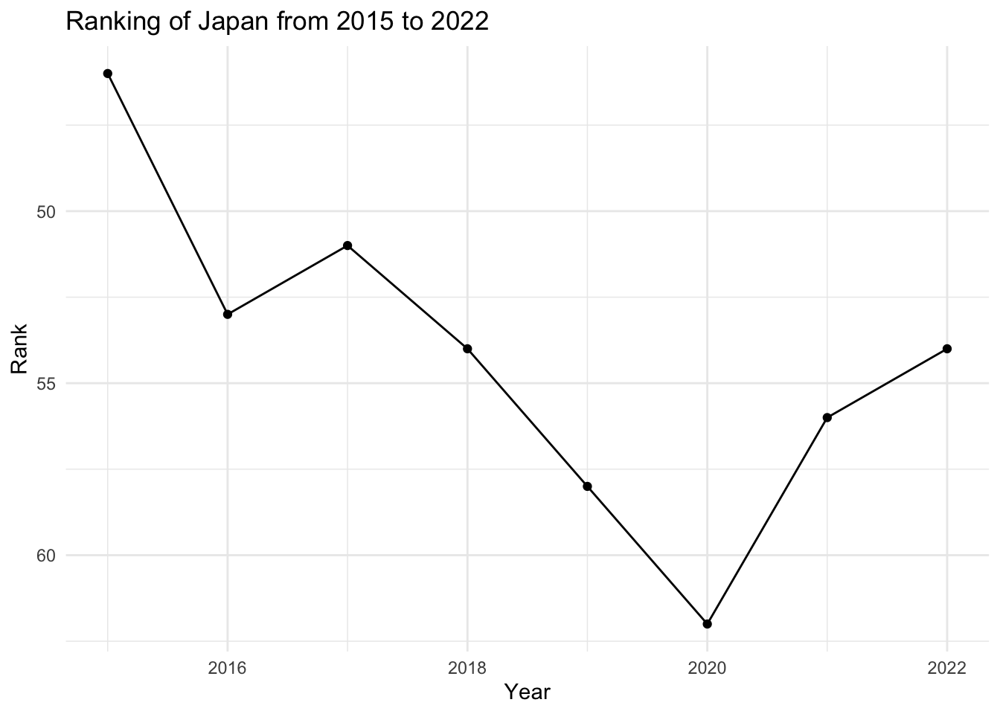

Code
library(tidyverse)
library(readr)
knitr::opts_chunk$set(echo = TRUE, warning=FALSE, message=FALSE)Zhongyue Lin
June 12, 2023
Happiness, a deeply personal and subjective experience, is often defined as a state of well-being and contentment, characterized by the presence of positive emotions and the absence of negative ones. The measurement of happiness is a complex task due to its highly subjective nature, necessitating an interdisciplinary approach. The World Happiness Report, an annual survey that assesses happiness levels across 153 countries globally, is a prime example of this approach.
Psychology contributes to our understanding of happiness, particularly in the use of the World Happiness Report’s data, by exploring emotions, cognitions, and behaviors. It emphasizes factors such as social support and freedom to make life choices, both key elements examined in the report. Similarly, behavioral economics, which explores how individual decision-making impacts happiness, is reflected in the report’s inclusion of GDP per capita and perceptions of corruption as potential influences on happiness.
Sociology and political science provide broader perspectives on how societal structures and governance impact happiness, offering context to the varying happiness levels between countries. Moreover, insights from neuroscience help us comprehend the physiological basis of happiness, illuminating why certain factors in the report, such as generosity or a healthy life expectancy, might elicit positive emotional responses.
The World Happiness Report, in its extensive data collection and analysis, embodies the interdisciplinary approach to defining and measuring happiness. It draws from various academic disciplines, such as psychology, behavioral economics, sociology, political science, and neuroscience, providing a comprehensive understanding of happiness on a global scale. By analyzing factors like GDP per capita, social support, freedom to make life choices, generosity, perceptions of corruption, and more, the report offers a robust tool for exploring the multi-faceted nature of happiness.
This dataset is from the World Happiness Report up to 2022 on the Kaggle platform https://www.kaggle.com/datasets/mathurinache/world-happiness-report
The World Happiness Report is an annual survey that evaluates the sense of happiness in 153 countries globally. The dataset of this report typically includes the happiness score of each country, along with various factors used to explain that score. These factors include: GDP per capita, healthy life expectancy, social support, freedom to make life choices, generosity, and perceptions of corruption. In addition, there is an indicator named “dystopia residual” that is used to compare the worst possible life in every aspect.
The report uses data from the Gallup World Poll to calculate happiness ratings and rankings. Based on responses to the survey, the results are calculated. One tool used is the Cantril ladder, a questionnaire that asks respondents to rank their current lives on a scale from 0 to 10, with 10 representing the best possible life they can imagine and 0 representing the worst possible existence. The responses from citizens are then averaged to obtain the happiness score for the country. Countries around the world are ranked in descending order of happiness. The World Happiness Report uses several key measures to evaluate the sense of happiness in each country:
GDP per Capital: This is the measure of a country’s economic output that accounts for its number of people. It serves as an indicator of the standard of living and economic prosperity. A higher GDP usually signifies better living conditions and opportunities, contributing to the happiness of the citizens.
Healthy Life Expectancy: This measure indicates the average lifespan of people in a country in a physically and mentally healthy state. It reflects people’s health status and their expectations of longevity, which significantly impact their sense of happiness.
Social Support: This factor represents whether individuals feel they have someone to rely on during tough times. It could include friends, family, or community members. Strong social support networks contribute positively to individuals’ sense of happiness.
Freedom to Make Life Choices: This factor evaluates the extent to which individuals feel they have the liberty to make key life decisions. The ability to choose how to live one’s life freely is essential to the overall sense of satisfaction and happiness.
Generosity: This measure determines the extent to which people in a country are willing to help others. Acts of generosity can enhance an individual’s sense of happiness and contribute to stronger community ties.
Perceptions of Corruption: This measure examines how corrupt individuals perceive their government and private sector to be. High levels of perceived corruption can lead to lower trust in societal systems, negatively impacting the happiness of citizens.
Dystopia Residual: This is a hypothetical measure that represents the worst possible living conditions. It’s used as a benchmark to compare the actual living conditions in each country. It’s essentially the ‘unexplained’ component of happiness, encapsulating any aspects of happiness not covered by the other six factors.
# Define the years you want to read in
years <- 2015:2022
# Loop over the years
for (year in years) {
# Define the path to the csv file
file_path <- paste0("_data/Happiness_Zhongyue_Lin/", year, ".csv")
# Read the csv file
df <- readr::read_csv(file_path)
# Add the year to the data frame
df <- dplyr::mutate(df, Year = year)
# Define the variable name
var_name <- paste0("Happy_", year)
# Assign the data frame to the variable name in the global environment
assign(var_name, df, envir = .GlobalEnv)
# Print the head and structure of the data frame
print(head(df))
}# A tibble: 6 × 13
Country Region Happi…¹ Happi…² Stand…³ Econo…⁴ Family Healt…⁵ Freedom Trust…⁶
<chr> <chr> <dbl> <dbl> <dbl> <dbl> <dbl> <dbl> <dbl> <dbl>
1 Switzer… Weste… 1 7.59 0.0341 1.40 1.35 0.941 0.666 0.420
2 Iceland Weste… 2 7.56 0.0488 1.30 1.40 0.948 0.629 0.141
3 Denmark Weste… 3 7.53 0.0333 1.33 1.36 0.875 0.649 0.484
4 Norway Weste… 4 7.52 0.0388 1.46 1.33 0.885 0.670 0.365
5 Canada North… 5 7.43 0.0355 1.33 1.32 0.906 0.633 0.330
6 Finland Weste… 6 7.41 0.0314 1.29 1.32 0.889 0.642 0.414
# … with 3 more variables: Generosity <dbl>, `Dystopia Residual` <dbl>,
# Year <int>, and abbreviated variable names ¹`Happiness Rank`,
# ²`Happiness Score`, ³`Standard Error`, ⁴`Economy (GDP per Capita)`,
# ⁵`Health (Life Expectancy)`, ⁶`Trust (Government Corruption)`
# A tibble: 6 × 14
Country Region Happi…¹ Happi…² Lower…³ Upper…⁴ Econo…⁵ Family Healt…⁶ Freedom
<chr> <chr> <dbl> <dbl> <dbl> <dbl> <dbl> <dbl> <dbl> <dbl>
1 Denmark Weste… 1 7.53 7.46 7.59 1.44 1.16 0.795 0.579
2 Switzer… Weste… 2 7.51 7.43 7.59 1.53 1.15 0.863 0.586
3 Iceland Weste… 3 7.50 7.33 7.67 1.43 1.18 0.867 0.566
4 Norway Weste… 4 7.50 7.42 7.58 1.58 1.13 0.796 0.596
5 Finland Weste… 5 7.41 7.35 7.48 1.41 1.13 0.811 0.571
6 Canada North… 6 7.40 7.34 7.47 1.44 1.10 0.828 0.574
# … with 4 more variables: `Trust (Government Corruption)` <dbl>,
# Generosity <dbl>, `Dystopia Residual` <dbl>, Year <int>, and abbreviated
# variable names ¹`Happiness Rank`, ²`Happiness Score`,
# ³`Lower Confidence Interval`, ⁴`Upper Confidence Interval`,
# ⁵`Economy (GDP per Capita)`, ⁶`Health (Life Expectancy)`
# A tibble: 6 × 13
Country Happi…¹ Happi…² Whisk…³ Whisk…⁴ Econo…⁵ Family Healt…⁶ Freedom Gener…⁷
<chr> <dbl> <dbl> <dbl> <dbl> <dbl> <dbl> <dbl> <dbl> <dbl>
1 Norway 1 7.54 7.59 7.48 1.62 1.53 0.797 0.635 0.362
2 Denmark 2 7.52 7.58 7.46 1.48 1.55 0.793 0.626 0.355
3 Iceland 3 7.50 7.62 7.39 1.48 1.61 0.834 0.627 0.476
4 Switze… 4 7.49 7.56 7.43 1.56 1.52 0.858 0.620 0.291
5 Finland 5 7.47 7.53 7.41 1.44 1.54 0.809 0.618 0.245
6 Nether… 6 7.38 7.43 7.33 1.50 1.43 0.811 0.585 0.470
# … with 3 more variables: Trust..Government.Corruption. <dbl>,
# Dystopia.Residual <dbl>, Year <int>, and abbreviated variable names
# ¹Happiness.Rank, ²Happiness.Score, ³Whisker.high, ⁴Whisker.low,
# ⁵Economy..GDP.per.Capita., ⁶Health..Life.Expectancy., ⁷Generosity
# A tibble: 6 × 10
Overall …¹ Count…² Score GDP p…³ Socia…⁴ Healt…⁵ Freed…⁶ Gener…⁷ Perce…⁸ Year
<dbl> <chr> <dbl> <dbl> <dbl> <dbl> <dbl> <dbl> <chr> <int>
1 1 Finland 7.63 1.30 1.59 0.874 0.681 0.202 0.393 2018
2 2 Norway 7.59 1.46 1.58 0.861 0.686 0.286 0.340 2018
3 3 Denmark 7.56 1.35 1.59 0.868 0.683 0.284 0.408 2018
4 4 Iceland 7.50 1.34 1.64 0.914 0.677 0.353 0.138 2018
5 5 Switze… 7.49 1.42 1.55 0.927 0.66 0.256 0.357 2018
6 6 Nether… 7.44 1.36 1.49 0.878 0.638 0.333 0.295 2018
# … with abbreviated variable names ¹`Overall rank`, ²`Country or region`,
# ³`GDP per capita`, ⁴`Social support`, ⁵`Healthy life expectancy`,
# ⁶`Freedom to make life choices`, ⁷Generosity, ⁸`Perceptions of corruption`
# A tibble: 6 × 10
Overall …¹ Count…² Score GDP p…³ Socia…⁴ Healt…⁵ Freed…⁶ Gener…⁷ Perce…⁸ Year
<dbl> <chr> <dbl> <dbl> <dbl> <dbl> <dbl> <dbl> <dbl> <int>
1 1 Finland 7.77 1.34 1.59 0.986 0.596 0.153 0.393 2019
2 2 Denmark 7.6 1.38 1.57 0.996 0.592 0.252 0.41 2019
3 3 Norway 7.55 1.49 1.58 1.03 0.603 0.271 0.341 2019
4 4 Iceland 7.49 1.38 1.62 1.03 0.591 0.354 0.118 2019
5 5 Nether… 7.49 1.40 1.52 0.999 0.557 0.322 0.298 2019
6 6 Switze… 7.48 1.45 1.53 1.05 0.572 0.263 0.343 2019
# … with abbreviated variable names ¹`Overall rank`, ²`Country or region`,
# ³`GDP per capita`, ⁴`Social support`, ⁵`Healthy life expectancy`,
# ⁶`Freedom to make life choices`, ⁷Generosity, ⁸`Perceptions of corruption`
# A tibble: 6 × 21
`Country name` Regio…¹ Ladde…² Stand…³ upper…⁴ lower…⁵ Logge…⁶ Socia…⁷ Healt…⁸
<chr> <chr> <dbl> <dbl> <dbl> <dbl> <dbl> <dbl> <dbl>
1 Finland Wester… 7.81 0.0312 7.87 7.75 10.6 0.954 71.9
2 Denmark Wester… 7.65 0.0335 7.71 7.58 10.8 0.956 72.4
3 Switzerland Wester… 7.56 0.0350 7.63 7.49 11.0 0.943 74.1
4 Iceland Wester… 7.50 0.0596 7.62 7.39 10.8 0.975 73
5 Norway Wester… 7.49 0.0348 7.56 7.42 11.1 0.952 73.2
6 Netherlands Wester… 7.45 0.0278 7.50 7.39 10.8 0.939 72.3
# … with 12 more variables: `Freedom to make life choices` <dbl>,
# Generosity <dbl>, `Perceptions of corruption` <dbl>,
# `Ladder score in Dystopia` <dbl>, `Explained by: Log GDP per capita` <dbl>,
# `Explained by: Social support` <dbl>,
# `Explained by: Healthy life expectancy` <dbl>,
# `Explained by: Freedom to make life choices` <dbl>,
# `Explained by: Generosity` <dbl>, …
# A tibble: 6 × 21
`Country name` Regio…¹ Ladde…² Stand…³ upper…⁴ lower…⁵ Logge…⁶ Socia…⁷ Healt…⁸
<chr> <chr> <dbl> <dbl> <dbl> <dbl> <dbl> <dbl> <dbl>
1 Finland Wester… 7.84 0.032 7.90 7.78 10.8 0.954 72
2 Denmark Wester… 7.62 0.035 7.69 7.55 10.9 0.954 72.7
3 Switzerland Wester… 7.57 0.036 7.64 7.5 11.1 0.942 74.4
4 Iceland Wester… 7.55 0.059 7.67 7.44 10.9 0.983 73
5 Netherlands Wester… 7.46 0.027 7.52 7.41 10.9 0.942 72.4
6 Norway Wester… 7.39 0.035 7.46 7.32 11.1 0.954 73.3
# … with 12 more variables: `Freedom to make life choices` <dbl>,
# Generosity <dbl>, `Perceptions of corruption` <dbl>,
# `Ladder score in Dystopia` <dbl>, `Explained by: Log GDP per capita` <dbl>,
# `Explained by: Social support` <dbl>,
# `Explained by: Healthy life expectancy` <dbl>,
# `Explained by: Freedom to make life choices` <dbl>,
# `Explained by: Generosity` <dbl>, …
# A tibble: 6 × 13
RANK Country Happi…¹ Whisk…² Whisk…³ Dysto…⁴ Expla…⁵ Expla…⁶ Expla…⁷ Expla…⁸
<dbl> <chr> <dbl> <dbl> <dbl> <chr> <chr> <chr> <chr> <chr>
1 1 Finland 7821 7886 7756 2,518 1,892 1,258 0,775 0,736
2 2 Denmark 7636 7710 7563 2,226 1,953 1,243 0,777 0,719
3 3 Iceland 7557 7651 7464 2,320 1,936 1,320 0,803 0,718
4 4 Switzer… 7512 7586 7437 2,153 2,026 1,226 0,822 0,677
5 5 Netherl… 7415 7471 7359 2,137 1,945 1,206 0,787 0,651
6 6 Luxembo… 7404 7501 7307 2,042 2,209 1,155 0,790 0,700
# … with 3 more variables: `Explained by: Generosity` <chr>,
# `Explained by: Perceptions of corruption` <chr>, Year <int>, and
# abbreviated variable names ¹`Happiness score`, ²`Whisker-high`,
# ³`Whisker-low`, ⁴`Dystopia (1.83) + residual`,
# ⁵`Explained by: GDP per capita`, ⁶`Explained by: Social support`,
# ⁷`Explained by: Healthy life expectancy`,
# ⁸`Explained by: Freedom to make life choices`The logic of this code is to read happiness index datasets from 2015 to 2022 and assign each dataset to a corresponding variable name based on the year. First, a vector is defined to include the years from 2015 to 2022. Then, through a loop, the code constructs the file path for each dataset and uses the read_csv() function to read the dataset, storing it in a variable named df.
Next, the code uses the mutate() function to add a new column named “Year” to the dataset, with the value set to the current year in the loop. The code also constructs a variable name based on the current year and uses the assign() function to assign the dataset to that variable name in the global environment.
Finally, the code prints the first few rows of each dataset to examine the data’s contents.
Through this loop, the code reads each dataset for each year, adds a new column for the year, and assigns the dataset to the corresponding variable name in the global environment. This allows each dataset for each year to be accessible and the first few rows can be printed to review the dataset’s contents.
# Create a function to rename rank column
rename_rank_column <- function(df, old_name) {
df %>%
rename(Rank = old_name)
}
# Apply this function to all dataframes
Happy_2015 <- rename_rank_column(Happy_2015, 'Happiness Rank')
Happy_2016 <- rename_rank_column(Happy_2016, 'Happiness Rank')
Happy_2017 <- rename_rank_column(Happy_2017, 'Happiness.Rank')
Happy_2018 <- rename_rank_column(Happy_2018, 'Overall rank')
Happy_2019 <- rename_rank_column(Happy_2019, 'Overall rank')
Happy_2020 <- rename_rank_column(Happy_2020, 'Rank')
Happy_2021 <- rename_rank_column(Happy_2021, 'Rank')
Happy_2022 <- rename_rank_column(Happy_2022, 'RANK')# Create a function to rename country column
rename_country_column <- function(df, old_name) {
df %>%
rename(Country = old_name)
}
# Apply this function to all dataframes
Happy_2015 <- rename_country_column(Happy_2015, 'Country')
Happy_2016 <- rename_country_column(Happy_2016, 'Country')
Happy_2017 <- rename_country_column(Happy_2017, 'Country')
Happy_2018 <- rename_country_column(Happy_2018, 'Country or region')
Happy_2019 <- rename_country_column(Happy_2019, 'Country or region')
Happy_2020 <- rename_country_column(Happy_2020, 'Country name')
Happy_2021 <- rename_country_column(Happy_2021, 'Country name')
Happy_2022 <- rename_country_column(Happy_2022, 'Country')# Create a function to rename score column
rename_score_column <- function(df, old_name) {
df %>%
rename(Score = old_name)
}
# Apply this function to all dataframes
Happy_2015 <- rename_score_column(Happy_2015, 'Happiness Score')
Happy_2016 <- rename_score_column(Happy_2016, 'Happiness Score')
Happy_2017 <- rename_score_column(Happy_2017, 'Happiness.Score')
Happy_2020 <- rename_score_column(Happy_2020, 'Ladder score')
Happy_2021 <- rename_score_column(Happy_2021, 'Ladder score')
Happy_2022 <- rename_score_column(Happy_2022, 'Happiness score')Happy_2022 <- Happy_2022 %>%
mutate(across(c('Dystopia (1.83) + residual',
'Explained by: GDP per capita',
'Explained by: Healthy life expectancy',
'Explained by: Freedom to make life choices','Explained by: Social support',
'Explained by: Generosity',
'Explained by: Perceptions of corruption'), ~ as.numeric(gsub(",", ".", .))),
across(-Country, as.numeric))
Happy_2022 <- Happy_2022 %>%
mutate(across(c("Score", "Whisker-high", "Whisker-low"), ~ . / 1000))# Create a function to rename multiple columns
rename_columns <- function(df, old_names, new_names) {
df %>%
rename_at(vars(old_names), ~ new_names)
}
# Define new names
new_names <- c("GDP_per_Capita", "Family", "Life_Expectancy", "Freedom",
"Generosity", "Government_Corruption", "Dystopia_Residual")
# Apply this function to all dataframes
Happy_2015 <- rename_columns(Happy_2015,
c("Economy (GDP per Capita)", "Family", "Health (Life Expectancy)",
"Freedom", "Generosity", "Trust (Government Corruption)", "Dystopia Residual"),
new_names)
Happy_2016 <- rename_columns(Happy_2016,
c("Economy (GDP per Capita)", "Family", "Health (Life Expectancy)",
"Freedom", "Generosity", "Trust (Government Corruption)", "Dystopia Residual"),
new_names)
Happy_2017 <- rename_columns(Happy_2017,
c("Economy..GDP.per.Capita.", "Family", "Health..Life.Expectancy.",
"Freedom", "Generosity", "Trust..Government.Corruption.", "Dystopia.Residual"),
new_names)
Happy_2018 <- rename_columns(Happy_2018,
c("GDP per capita", "Social support", "Healthy life expectancy",
"Freedom to make life choices", "Generosity", "Perceptions of corruption"),
new_names[-length(new_names)])
Happy_2019 <- rename_columns(Happy_2019,
c("GDP per capita", "Social support", "Healthy life expectancy",
"Freedom to make life choices", "Generosity", "Perceptions of corruption"),
new_names[-length(new_names)])old_names_2020_to_2021 <- c("Explained by: Log GDP per capita",
"Explained by: Social support",
"Explained by: Healthy life expectancy",
"Explained by: Freedom to make life choices",
"Explained by: Generosity",
"Explained by: Perceptions of corruption",
"Dystopia + residual")
old_names_2022 <- c("Explained by: GDP per capita",
"Explained by: Social support",
"Explained by: Healthy life expectancy",
"Explained by: Freedom to make life choices",
"Explained by: Generosity",
"Explained by: Perceptions of corruption",
"Dystopia (1.83) + residual")
# Define a function to drop a column if it exists
drop_column_if_exists <- function(df, column_name) {
if (column_name %in% colnames(df)) {
df <- df %>% select(-column_name)
}
return(df)
}
# Drop original 'Generosity' column if it exists in Happy_2020 and Happy_2021 datasets
Happy_2020 <- drop_column_if_exists(Happy_2020, 'Generosity')
Happy_2021 <- drop_column_if_exists(Happy_2021, 'Generosity')
# Then proceed with the renaming process
Happy_2020 <- rename_columns(Happy_2020, old_names_2020_to_2021, new_names)
Happy_2021 <- rename_columns(Happy_2021, old_names_2020_to_2021, new_names)
Happy_2022 <- rename_columns(Happy_2022, old_names_2022, new_names)Rows: 158
Columns: 13
$ Country <chr> "Switzerland", "Iceland", "Denmark", "Norway", "…
$ Region <chr> "Western Europe", "Western Europe", "Western Eur…
$ Rank <dbl> 1, 2, 3, 4, 5, 6, 7, 8, 9, 10, 11, 12, 13, 14, 1…
$ Score <dbl> 7.587, 7.561, 7.527, 7.522, 7.427, 7.406, 7.378,…
$ `Standard Error` <dbl> 0.03411, 0.04884, 0.03328, 0.03880, 0.03553, 0.0…
$ GDP_per_Capita <dbl> 1.39651, 1.30232, 1.32548, 1.45900, 1.32629, 1.2…
$ Family <dbl> 1.34951, 1.40223, 1.36058, 1.33095, 1.32261, 1.3…
$ Life_Expectancy <dbl> 0.94143, 0.94784, 0.87464, 0.88521, 0.90563, 0.8…
$ Freedom <dbl> 0.66557, 0.62877, 0.64938, 0.66973, 0.63297, 0.6…
$ Government_Corruption <dbl> 0.41978, 0.14145, 0.48357, 0.36503, 0.32957, 0.4…
$ Generosity <dbl> 0.29678, 0.43630, 0.34139, 0.34699, 0.45811, 0.2…
$ Dystopia_Residual <dbl> 2.51738, 2.70201, 2.49204, 2.46531, 2.45176, 2.6…
$ Year <int> 2015, 2015, 2015, 2015, 2015, 2015, 2015, 2015, …
Rows: 157
Columns: 14
$ Country <chr> "Denmark", "Switzerland", "Iceland", "Norw…
$ Region <chr> "Western Europe", "Western Europe", "Weste…
$ Rank <dbl> 1, 2, 3, 4, 5, 6, 7, 8, 9, 10, 11, 12, 13,…
$ Score <dbl> 7.526, 7.509, 7.501, 7.498, 7.413, 7.404, …
$ `Lower Confidence Interval` <dbl> 7.460, 7.428, 7.333, 7.421, 7.351, 7.335, …
$ `Upper Confidence Interval` <dbl> 7.592, 7.590, 7.669, 7.575, 7.475, 7.473, …
$ GDP_per_Capita <dbl> 1.44178, 1.52733, 1.42666, 1.57744, 1.4059…
$ Family <dbl> 1.16374, 1.14524, 1.18326, 1.12690, 1.1346…
$ Life_Expectancy <dbl> 0.79504, 0.86303, 0.86733, 0.79579, 0.8109…
$ Freedom <dbl> 0.57941, 0.58557, 0.56624, 0.59609, 0.5710…
$ Government_Corruption <dbl> 0.44453, 0.41203, 0.14975, 0.35776, 0.4100…
$ Generosity <dbl> 0.36171, 0.28083, 0.47678, 0.37895, 0.2549…
$ Dystopia_Residual <dbl> 2.73939, 2.69463, 2.83137, 2.66465, 2.8259…
$ Year <int> 2016, 2016, 2016, 2016, 2016, 2016, 2016, …
Rows: 155
Columns: 13
$ Country <chr> "Norway", "Denmark", "Iceland", "Switzerland", "…
$ Rank <dbl> 1, 2, 3, 4, 5, 6, 7, 8, 9, 10, 11, 12, 13, 14, 1…
$ Score <dbl> 7.537, 7.522, 7.504, 7.494, 7.469, 7.377, 7.316,…
$ Whisker.high <dbl> 7.594445, 7.581728, 7.622030, 7.561772, 7.527542…
$ Whisker.low <dbl> 7.479556, 7.462272, 7.385970, 7.426227, 7.410458…
$ GDP_per_Capita <dbl> 1.616463, 1.482383, 1.480633, 1.564980, 1.443572…
$ Family <dbl> 1.533524, 1.551122, 1.610574, 1.516912, 1.540247…
$ Life_Expectancy <dbl> 0.7966665, 0.7925655, 0.8335521, 0.8581313, 0.80…
$ Freedom <dbl> 0.6354226, 0.6260067, 0.6271626, 0.6200706, 0.61…
$ Generosity <dbl> 0.36201224, 0.35528049, 0.47554022, 0.29054928, …
$ Government_Corruption <dbl> 0.31596383, 0.40077007, 0.15352656, 0.36700729, …
$ Dystopia_Residual <dbl> 2.277027, 2.313707, 2.322715, 2.276716, 2.430182…
$ Year <int> 2017, 2017, 2017, 2017, 2017, 2017, 2017, 2017, …
Rows: 156
Columns: 10
$ Rank <dbl> 1, 2, 3, 4, 5, 6, 7, 8, 9, 10, 11, 12, 13, 14, 1…
$ Country <chr> "Finland", "Norway", "Denmark", "Iceland", "Swit…
$ Score <dbl> 7.632, 7.594, 7.555, 7.495, 7.487, 7.441, 7.328,…
$ GDP_per_Capita <dbl> 1.305, 1.456, 1.351, 1.343, 1.420, 1.361, 1.330,…
$ Family <dbl> 1.592, 1.582, 1.590, 1.644, 1.549, 1.488, 1.532,…
$ Life_Expectancy <dbl> 0.874, 0.861, 0.868, 0.914, 0.927, 0.878, 0.896,…
$ Freedom <dbl> 0.681, 0.686, 0.683, 0.677, 0.660, 0.638, 0.653,…
$ Generosity <dbl> 0.202, 0.286, 0.284, 0.353, 0.256, 0.333, 0.321,…
$ Government_Corruption <chr> "0.393", "0.340", "0.408", "0.138", "0.357", "0.…
$ Year <int> 2018, 2018, 2018, 2018, 2018, 2018, 2018, 2018, …
Rows: 156
Columns: 10
$ Rank <dbl> 1, 2, 3, 4, 5, 6, 7, 8, 9, 10, 11, 12, 13, 14, 1…
$ Country <chr> "Finland", "Denmark", "Norway", "Iceland", "Neth…
$ Score <dbl> 7.769, 7.600, 7.554, 7.494, 7.488, 7.480, 7.343,…
$ GDP_per_Capita <dbl> 1.340, 1.383, 1.488, 1.380, 1.396, 1.452, 1.387,…
$ Family <dbl> 1.587, 1.573, 1.582, 1.624, 1.522, 1.526, 1.487,…
$ Life_Expectancy <dbl> 0.986, 0.996, 1.028, 1.026, 0.999, 1.052, 1.009,…
$ Freedom <dbl> 0.596, 0.592, 0.603, 0.591, 0.557, 0.572, 0.574,…
$ Generosity <dbl> 0.153, 0.252, 0.271, 0.354, 0.322, 0.263, 0.267,…
$ Government_Corruption <dbl> 0.393, 0.410, 0.341, 0.118, 0.298, 0.343, 0.373,…
$ Year <int> 2019, 2019, 2019, 2019, 2019, 2019, 2019, 2019, …
Rows: 153
Columns: 21
$ Country <chr> "Finland", "Denmark", "Switzerland", …
$ `Regional indicator` <chr> "Western Europe", "Western Europe", "…
$ Score <dbl> 7.8087, 7.6456, 7.5599, 7.5045, 7.488…
$ `Standard error of ladder score` <dbl> 0.03115630, 0.03349229, 0.03501417, 0…
$ upperwhisker <dbl> 7.869766, 7.711245, 7.628528, 7.62134…
$ lowerwhisker <dbl> 7.747634, 7.579955, 7.491272, 7.38765…
$ `Logged GDP per capita` <dbl> 10.639267, 10.774001, 10.979933, 10.7…
$ `Social support` <dbl> 0.9543297, 0.9559908, 0.9428466, 0.97…
$ `Healthy life expectancy` <dbl> 71.90083, 72.40250, 74.10245, 73.0000…
$ `Freedom to make life choices` <dbl> 0.9491722, 0.9514443, 0.9213367, 0.94…
$ `Perceptions of corruption` <dbl> 0.1954446, 0.1684895, 0.3037284, 0.71…
$ `Ladder score in Dystopia` <dbl> 1.972317, 1.972317, 1.972317, 1.97231…
$ GDP_per_Capita <dbl> 1.2851895, 1.3269485, 1.3907742, 1.32…
$ Family <dbl> 1.499526, 1.503449, 1.472403, 1.54756…
$ Life_Expectancy <dbl> 0.9612714, 0.9793326, 1.0405332, 1.00…
$ Freedom <dbl> 0.6623167, 0.6650399, 0.6289545, 0.66…
$ Generosity <dbl> 0.15967044, 0.24279340, 0.26905575, 0…
$ Government_Corruption <dbl> 0.47785726, 0.49526033, 0.40794590, 0…
$ Dystopia_Residual <dbl> 2.762835, 2.432741, 2.350267, 2.46068…
$ Year <int> 2020, 2020, 2020, 2020, 2020, 2020, 2…
$ Rank <dbl> 1, 2, 3, 4, 5, 6, 7, 8, 9, 10, 11, 12…
Rows: 149
Columns: 21
$ Country <chr> "Finland", "Denmark", "Switzerland", …
$ `Regional indicator` <chr> "Western Europe", "Western Europe", "…
$ Score <dbl> 7.842, 7.620, 7.571, 7.554, 7.464, 7.…
$ `Standard error of ladder score` <dbl> 0.032, 0.035, 0.036, 0.059, 0.027, 0.…
$ upperwhisker <dbl> 7.904, 7.687, 7.643, 7.670, 7.518, 7.…
$ lowerwhisker <dbl> 7.780, 7.552, 7.500, 7.438, 7.410, 7.…
$ `Logged GDP per capita` <dbl> 10.775, 10.933, 11.117, 10.878, 10.93…
$ `Social support` <dbl> 0.954, 0.954, 0.942, 0.983, 0.942, 0.…
$ `Healthy life expectancy` <dbl> 72.000, 72.700, 74.400, 73.000, 72.40…
$ `Freedom to make life choices` <dbl> 0.949, 0.946, 0.919, 0.955, 0.913, 0.…
$ `Perceptions of corruption` <dbl> 0.186, 0.179, 0.292, 0.673, 0.338, 0.…
$ `Ladder score in Dystopia` <dbl> 2.43, 2.43, 2.43, 2.43, 2.43, 2.43, 2…
$ GDP_per_Capita <dbl> 1.446, 1.502, 1.566, 1.482, 1.501, 1.…
$ Family <dbl> 1.106, 1.108, 1.079, 1.172, 1.079, 1.…
$ Life_Expectancy <dbl> 0.741, 0.763, 0.816, 0.772, 0.753, 0.…
$ Freedom <dbl> 0.691, 0.686, 0.653, 0.698, 0.647, 0.…
$ Generosity <dbl> 0.124, 0.208, 0.204, 0.293, 0.302, 0.…
$ Government_Corruption <dbl> 0.481, 0.485, 0.413, 0.170, 0.384, 0.…
$ Dystopia_Residual <dbl> 3.253, 2.868, 2.839, 2.967, 2.798, 2.…
$ Year <int> 2021, 2021, 2021, 2021, 2021, 2021, 2…
$ Rank <dbl> 1, 2, 3, 4, 5, 6, 7, 8, 9, 10, 11, 12…
Rows: 147
Columns: 13
$ Rank <dbl> 1, 2, 3, 4, 5, 6, 7, 8, 9, 10, 11, 12, 13, 14, 1…
$ Country <chr> "Finland", "Denmark", "Iceland", "Switzerland", …
$ Score <dbl> 7.821, 7.636, 7.557, 7.512, 7.415, 7.404, 7.384,…
$ `Whisker-high` <dbl> 7.886, 7.710, 7.651, 7.586, 7.471, 7.501, 7.454,…
$ `Whisker-low` <dbl> 7.756, 7.563, 7.464, 7.437, 7.359, 7.307, 7.315,…
$ Dystopia_Residual <dbl> 2.518, 2.226, 2.320, 2.153, 2.137, 2.042, 2.003,…
$ GDP_per_Capita <dbl> 1.892, 1.953, 1.936, 2.026, 1.945, 2.209, 1.920,…
$ Family <dbl> 1.258, 1.243, 1.320, 1.226, 1.206, 1.155, 1.204,…
$ Life_Expectancy <dbl> 0.775, 0.777, 0.803, 0.822, 0.787, 0.790, 0.803,…
$ Freedom <dbl> 0.736, 0.719, 0.718, 0.677, 0.651, 0.700, 0.724,…
$ Generosity <dbl> 0.109, 0.188, 0.270, 0.147, 0.271, 0.120, 0.218,…
$ Government_Corruption <dbl> 0.534, 0.532, 0.191, 0.461, 0.419, 0.388, 0.512,…
$ Year <dbl> 2022, 2022, 2022, 2022, 2022, 2022, 2022, 2022, …[[1]]
# A tibble: 158 × 13
Country Region Rank Score Stand…¹ GDP_p…² Family Life_…³ Freedom Gover…⁴
<chr> <chr> <dbl> <dbl> <dbl> <dbl> <dbl> <dbl> <dbl> <dbl>
1 Switzerland Weste… 1 7.59 0.0341 1.40 1.35 0.941 0.666 0.420
2 Iceland Weste… 2 7.56 0.0488 1.30 1.40 0.948 0.629 0.141
3 Denmark Weste… 3 7.53 0.0333 1.33 1.36 0.875 0.649 0.484
4 Norway Weste… 4 7.52 0.0388 1.46 1.33 0.885 0.670 0.365
5 Canada North… 5 7.43 0.0355 1.33 1.32 0.906 0.633 0.330
6 Finland Weste… 6 7.41 0.0314 1.29 1.32 0.889 0.642 0.414
7 Netherlands Weste… 7 7.38 0.0280 1.33 1.28 0.893 0.616 0.318
8 Sweden Weste… 8 7.36 0.0316 1.33 1.29 0.911 0.660 0.438
9 New Zealand Austr… 9 7.29 0.0337 1.25 1.32 0.908 0.639 0.429
10 Australia Austr… 10 7.28 0.0408 1.33 1.31 0.932 0.651 0.356
# … with 148 more rows, 3 more variables: Generosity <dbl>,
# Dystopia_Residual <dbl>, Year <int>, and abbreviated variable names
# ¹`Standard Error`, ²GDP_per_Capita, ³Life_Expectancy,
# ⁴Government_Corruption
[[2]]
# A tibble: 157 × 14
Country Region Rank Score Lower…¹ Upper…² GDP_p…³ Family Life_…⁴ Freedom
<chr> <chr> <dbl> <dbl> <dbl> <dbl> <dbl> <dbl> <dbl> <dbl>
1 Denmark Weste… 1 7.53 7.46 7.59 1.44 1.16 0.795 0.579
2 Switzerland Weste… 2 7.51 7.43 7.59 1.53 1.15 0.863 0.586
3 Iceland Weste… 3 7.50 7.33 7.67 1.43 1.18 0.867 0.566
4 Norway Weste… 4 7.50 7.42 7.58 1.58 1.13 0.796 0.596
5 Finland Weste… 5 7.41 7.35 7.48 1.41 1.13 0.811 0.571
6 Canada North… 6 7.40 7.34 7.47 1.44 1.10 0.828 0.574
7 Netherlands Weste… 7 7.34 7.28 7.39 1.46 1.03 0.812 0.552
8 New Zealand Austr… 8 7.33 7.26 7.40 1.36 1.17 0.831 0.581
9 Australia Austr… 9 7.31 7.24 7.38 1.44 1.10 0.851 0.568
10 Sweden Weste… 10 7.29 7.23 7.36 1.45 1.09 0.831 0.582
# … with 147 more rows, 4 more variables: Government_Corruption <dbl>,
# Generosity <dbl>, Dystopia_Residual <dbl>, Year <int>, and abbreviated
# variable names ¹`Lower Confidence Interval`, ²`Upper Confidence Interval`,
# ³GDP_per_Capita, ⁴Life_Expectancy
[[3]]
# A tibble: 155 × 13
Country Rank Score Whisk…¹ Whisk…² GDP_p…³ Family Life_…⁴ Freedom Gener…⁵
<chr> <dbl> <dbl> <dbl> <dbl> <dbl> <dbl> <dbl> <dbl> <dbl>
1 Norway 1 7.54 7.59 7.48 1.62 1.53 0.797 0.635 0.362
2 Denmark 2 7.52 7.58 7.46 1.48 1.55 0.793 0.626 0.355
3 Iceland 3 7.50 7.62 7.39 1.48 1.61 0.834 0.627 0.476
4 Switzerla… 4 7.49 7.56 7.43 1.56 1.52 0.858 0.620 0.291
5 Finland 5 7.47 7.53 7.41 1.44 1.54 0.809 0.618 0.245
6 Netherlan… 6 7.38 7.43 7.33 1.50 1.43 0.811 0.585 0.470
7 Canada 7 7.32 7.38 7.25 1.48 1.48 0.835 0.611 0.436
8 New Zeala… 8 7.31 7.38 7.25 1.41 1.55 0.817 0.614 0.500
9 Sweden 9 7.28 7.34 7.22 1.49 1.48 0.831 0.613 0.385
10 Australia 10 7.28 7.36 7.21 1.48 1.51 0.844 0.602 0.478
# … with 145 more rows, 3 more variables: Government_Corruption <dbl>,
# Dystopia_Residual <dbl>, Year <int>, and abbreviated variable names
# ¹Whisker.high, ²Whisker.low, ³GDP_per_Capita, ⁴Life_Expectancy, ⁵Generosity
[[4]]
# A tibble: 156 × 10
Rank Country Score GDP_pe…¹ Family Life_…² Freedom Gener…³ Gover…⁴ Year
<dbl> <chr> <dbl> <dbl> <dbl> <dbl> <dbl> <dbl> <chr> <int>
1 1 Finland 7.63 1.30 1.59 0.874 0.681 0.202 0.393 2018
2 2 Norway 7.59 1.46 1.58 0.861 0.686 0.286 0.340 2018
3 3 Denmark 7.56 1.35 1.59 0.868 0.683 0.284 0.408 2018
4 4 Iceland 7.50 1.34 1.64 0.914 0.677 0.353 0.138 2018
5 5 Switzerland 7.49 1.42 1.55 0.927 0.66 0.256 0.357 2018
6 6 Netherlands 7.44 1.36 1.49 0.878 0.638 0.333 0.295 2018
7 7 Canada 7.33 1.33 1.53 0.896 0.653 0.321 0.291 2018
8 8 New Zealand 7.32 1.27 1.60 0.876 0.669 0.365 0.389 2018
9 9 Sweden 7.31 1.36 1.50 0.913 0.659 0.285 0.383 2018
10 10 Australia 7.27 1.34 1.57 0.91 0.647 0.361 0.302 2018
# … with 146 more rows, and abbreviated variable names ¹GDP_per_Capita,
# ²Life_Expectancy, ³Generosity, ⁴Government_Corruption
[[5]]
# A tibble: 156 × 10
Rank Country Score GDP_pe…¹ Family Life_…² Freedom Gener…³ Gover…⁴ Year
<dbl> <chr> <dbl> <dbl> <dbl> <dbl> <dbl> <dbl> <dbl> <int>
1 1 Finland 7.77 1.34 1.59 0.986 0.596 0.153 0.393 2019
2 2 Denmark 7.6 1.38 1.57 0.996 0.592 0.252 0.41 2019
3 3 Norway 7.55 1.49 1.58 1.03 0.603 0.271 0.341 2019
4 4 Iceland 7.49 1.38 1.62 1.03 0.591 0.354 0.118 2019
5 5 Netherlands 7.49 1.40 1.52 0.999 0.557 0.322 0.298 2019
6 6 Switzerland 7.48 1.45 1.53 1.05 0.572 0.263 0.343 2019
7 7 Sweden 7.34 1.39 1.49 1.01 0.574 0.267 0.373 2019
8 8 New Zealand 7.31 1.30 1.56 1.03 0.585 0.33 0.38 2019
9 9 Canada 7.28 1.36 1.50 1.04 0.584 0.285 0.308 2019
10 10 Austria 7.25 1.38 1.48 1.02 0.532 0.244 0.226 2019
# … with 146 more rows, and abbreviated variable names ¹GDP_per_Capita,
# ²Life_Expectancy, ³Generosity, ⁴Government_Corruption
[[6]]
# A tibble: 153 × 21
Country Regio…¹ Score Stand…² upper…³ lower…⁴ Logge…⁵ Socia…⁶ Healt…⁷ Freed…⁸
<chr> <chr> <dbl> <dbl> <dbl> <dbl> <dbl> <dbl> <dbl> <dbl>
1 Finland Wester… 7.81 0.0312 7.87 7.75 10.6 0.954 71.9 0.949
2 Denmark Wester… 7.65 0.0335 7.71 7.58 10.8 0.956 72.4 0.951
3 Switze… Wester… 7.56 0.0350 7.63 7.49 11.0 0.943 74.1 0.921
4 Iceland Wester… 7.50 0.0596 7.62 7.39 10.8 0.975 73 0.949
5 Norway Wester… 7.49 0.0348 7.56 7.42 11.1 0.952 73.2 0.956
6 Nether… Wester… 7.45 0.0278 7.50 7.39 10.8 0.939 72.3 0.909
7 Sweden Wester… 7.35 0.0362 7.42 7.28 10.8 0.926 72.6 0.939
8 New Ze… North … 7.30 0.0395 7.38 7.22 10.5 0.949 73.2 0.936
9 Austria Wester… 7.29 0.0334 7.36 7.23 10.7 0.928 73.0 0.900
10 Luxemb… Wester… 7.24 0.0309 7.30 7.18 11.5 0.907 72.6 0.906
# … with 143 more rows, 11 more variables: `Perceptions of corruption` <dbl>,
# `Ladder score in Dystopia` <dbl>, GDP_per_Capita <dbl>, Family <dbl>,
# Life_Expectancy <dbl>, Freedom <dbl>, Generosity <dbl>,
# Government_Corruption <dbl>, Dystopia_Residual <dbl>, Year <int>,
# Rank <dbl>, and abbreviated variable names ¹`Regional indicator`,
# ²`Standard error of ladder score`, ³upperwhisker, ⁴lowerwhisker,
# ⁵`Logged GDP per capita`, ⁶`Social support`, ⁷`Healthy life expectancy`, …
[[7]]
# A tibble: 149 × 21
Country Regio…¹ Score Stand…² upper…³ lower…⁴ Logge…⁵ Socia…⁶ Healt…⁷ Freed…⁸
<chr> <chr> <dbl> <dbl> <dbl> <dbl> <dbl> <dbl> <dbl> <dbl>
1 Finland Wester… 7.84 0.032 7.90 7.78 10.8 0.954 72 0.949
2 Denmark Wester… 7.62 0.035 7.69 7.55 10.9 0.954 72.7 0.946
3 Switze… Wester… 7.57 0.036 7.64 7.5 11.1 0.942 74.4 0.919
4 Iceland Wester… 7.55 0.059 7.67 7.44 10.9 0.983 73 0.955
5 Nether… Wester… 7.46 0.027 7.52 7.41 10.9 0.942 72.4 0.913
6 Norway Wester… 7.39 0.035 7.46 7.32 11.1 0.954 73.3 0.96
7 Sweden Wester… 7.36 0.036 7.43 7.29 10.9 0.934 72.7 0.945
8 Luxemb… Wester… 7.32 0.037 7.40 7.25 11.6 0.908 72.6 0.907
9 New Ze… North … 7.28 0.04 7.36 7.20 10.6 0.948 73.4 0.929
10 Austria Wester… 7.27 0.036 7.34 7.20 10.9 0.934 73.3 0.908
# … with 139 more rows, 11 more variables: `Perceptions of corruption` <dbl>,
# `Ladder score in Dystopia` <dbl>, GDP_per_Capita <dbl>, Family <dbl>,
# Life_Expectancy <dbl>, Freedom <dbl>, Generosity <dbl>,
# Government_Corruption <dbl>, Dystopia_Residual <dbl>, Year <int>,
# Rank <dbl>, and abbreviated variable names ¹`Regional indicator`,
# ²`Standard error of ladder score`, ³upperwhisker, ⁴lowerwhisker,
# ⁵`Logged GDP per capita`, ⁶`Social support`, ⁷`Healthy life expectancy`, …
[[8]]
# A tibble: 147 × 13
Rank Country Score Whisk…¹ Whisk…² Dysto…³ GDP_p…⁴ Family Life_…⁵ Freedom
<dbl> <chr> <dbl> <dbl> <dbl> <dbl> <dbl> <dbl> <dbl> <dbl>
1 1 Finland 7.82 7.89 7.76 2.52 1.89 1.26 0.775 0.736
2 2 Denmark 7.64 7.71 7.56 2.23 1.95 1.24 0.777 0.719
3 3 Iceland 7.56 7.65 7.46 2.32 1.94 1.32 0.803 0.718
4 4 Switzerla… 7.51 7.59 7.44 2.15 2.03 1.23 0.822 0.677
5 5 Netherlan… 7.42 7.47 7.36 2.14 1.94 1.21 0.787 0.651
6 6 Luxembour… 7.40 7.50 7.31 2.04 2.21 1.16 0.79 0.7
7 7 Sweden 7.38 7.45 7.32 2.00 1.92 1.20 0.803 0.724
8 8 Norway 7.36 7.44 7.29 1.92 2.00 1.24 0.786 0.728
9 9 Israel 7.36 7.43 7.30 2.63 1.83 1.22 0.818 0.568
10 10 New Zeala… 7.2 7.28 7.12 1.95 1.85 1.24 0.752 0.68
# … with 137 more rows, 3 more variables: Generosity <dbl>,
# Government_Corruption <dbl>, Year <dbl>, and abbreviated variable names
# ¹`Whisker-high`, ²`Whisker-low`, ³Dystopia_Residual, ⁴GDP_per_Capita,
# ⁵Life_ExpectancyIn the data cleaning stage, I standardized the format of the datasets from 2015 to 2022. This was done to eliminate differences between the datasets and ensure consistent structure and variable names. This process has several benefits for subsequent data analysis.
By standardizing the format of the datasets, I ensured that the data had consistent structure and variable names across different years. This makes the data easier to understand and compare, reducing confusion and errors that can arise from varying naming conventions and structures.
Additionally, standardizing the format enhances reproducibility. Once the cleaning and renaming rules are defined, future datasets can be processed using the same rules, eliminating the need for repetitive work. This improves efficiency and reduces the likelihood of errors.
Using consistent variable names improves readability. Descriptive and clear variable names make it easier for others to understand the content of the dataset and facilitate my own analysis and reporting in subsequent stages.
Standardizing the format also benefits data analysis. Consistent data formats make it easier to aggregate, filter, visualize, and model the data across multiple years without the need for different processing steps for each dataset. This provides a more efficient and streamlined data analysis process.
In conclusion, by standardizing the format of the datasets from 2015 to 2022, I ensured consistency, reproducibility, and readability of the data, while improving the efficiency and accuracy of data analysis. This establishes a solid foundation for subsequent data exploration, analysis, and interpretation.
Happy_2015 <- Happy_2015 %>% mutate(Government_Corruption = as.numeric(Government_Corruption))
Happy_2016 <- Happy_2016 %>% mutate(Government_Corruption = as.numeric(Government_Corruption))
Happy_2017 <- Happy_2017 %>% mutate(Government_Corruption = as.numeric(Government_Corruption))
Happy_2018 <- Happy_2018 %>% mutate(Government_Corruption = as.numeric(Government_Corruption))
Happy_2019 <- Happy_2019 %>% mutate(Government_Corruption = as.numeric(Government_Corruption))
Happy_2020 <- Happy_2020 %>% mutate(Government_Corruption = as.numeric(Government_Corruption))
Happy_2021 <- Happy_2021 %>% mutate(Government_Corruption = as.numeric(Government_Corruption))
Happy_2022 <- Happy_2022 %>% mutate(Government_Corruption = as.numeric(Government_Corruption))needed_columns <- c("Country", "Year", "Score", "Rank", "GDP_per_Capita", "Family",
"Life_Expectancy", "Freedom", "Generosity", "Government_Corruption"
)
# Create a function to select a specific column
select_columns <- function(df, columns) {
df %>% select(all_of(columns))
}
Happy_2015_selected <- select_columns(Happy_2015, needed_columns)
Happy_2016_selected <- select_columns(Happy_2016, needed_columns)
Happy_2017_selected <- select_columns(Happy_2017, needed_columns)
Happy_2018_selected <- select_columns(Happy_2018, needed_columns)
Happy_2019_selected <- select_columns(Happy_2019, needed_columns)
Happy_2020_selected <- select_columns(Happy_2020, needed_columns)
Happy_2021_selected <- select_columns(Happy_2021, needed_columns)
Happy_2022_selected <- select_columns(Happy_2022, needed_columns)
# Finally, combine all the selected data boxes together
all_years_selected <- bind_rows(Happy_2015_selected, Happy_2016_selected, Happy_2017_selected,
Happy_2018_selected, Happy_2019_selected, Happy_2020_selected,
Happy_2021_selected, Happy_2022_selected)
all_years_selected <- all_years_selected %>%
mutate(Rank = as.integer(Rank))
all_years_selected# A tibble: 1,231 × 10
Country Year Score Rank GDP_pe…¹ Family Life_…² Freedom Gener…³ Gover…⁴
<chr> <dbl> <dbl> <int> <dbl> <dbl> <dbl> <dbl> <dbl> <dbl>
1 Switzerland 2015 7.59 1 1.40 1.35 0.941 0.666 0.297 0.420
2 Iceland 2015 7.56 2 1.30 1.40 0.948 0.629 0.436 0.141
3 Denmark 2015 7.53 3 1.33 1.36 0.875 0.649 0.341 0.484
4 Norway 2015 7.52 4 1.46 1.33 0.885 0.670 0.347 0.365
5 Canada 2015 7.43 5 1.33 1.32 0.906 0.633 0.458 0.330
6 Finland 2015 7.41 6 1.29 1.32 0.889 0.642 0.234 0.414
7 Netherlands 2015 7.38 7 1.33 1.28 0.893 0.616 0.476 0.318
8 Sweden 2015 7.36 8 1.33 1.29 0.911 0.660 0.363 0.438
9 New Zealand 2015 7.29 9 1.25 1.32 0.908 0.639 0.475 0.429
10 Australia 2015 7.28 10 1.33 1.31 0.932 0.651 0.436 0.356
# … with 1,221 more rows, and abbreviated variable names ¹GDP_per_Capita,
# ²Life_Expectancy, ³Generosity, ⁴Government_Corruption# Filter for Japan
japan_data <- all_years_selected %>%
filter(Country == "Japan")
# Plot rank over time
library(ggplot2)
ggplot(japan_data, aes(x = Year, y = Rank)) +
geom_line() +
geom_point() +
theme_minimal() +
ggtitle("Ranking of Japan from 2015 to 2022") +
xlab("Year") +
ylab("Rank") +
scale_y_reverse() # Reverse the y axis as rank 1 is the highest
The World Happiness Report’s dataset offers a wealth of information that can help address numerous research questions related to national happiness levels and the factors that influence them. Here’s a more detailed look at the potential research questions mentioned:
Which factors most significantly influence a country’s happiness? This question seeks to determine the primary drivers of happiness on a national scale. Are economic factors like GDP per capita more influential, or do social factors such as social support and freedom to make life choices hold more weight? Additionally, to what extent does a nation’s perception of corruption impact the overall happiness? Analyzing correlations and conducting regression analysis could shed light on these relationships.
How does happiness differ among countries? This question explores the disparities in happiness levels across various nations. Which countries consistently rank at the top, and which ones at the bottom? Are there discernible patterns geographically, economically, or culturally? Comparing and analyzing the happiness scores and their respective factors across different countries can provide insights.
How do various factors and overall happiness evolve over time? This question addresses the temporal dynamics of happiness and its influencing factors. Are there trends showing that certain factors become more or less influential over time? Does the overall happiness level of countries or the world at large rise, fall, or remain stable? Time series analysis could be useful in this context.
How does a specific factor impact happiness? This question focuses on the relationship between a single factor and happiness. For instance, how does a rise in GDP per capita or a decrease in perceived corruption affect the happiness score? Understanding this can help pinpoint what initiatives might be most effective in increasing a country’s happiness. Conducting detailed analysis for individual factors and their impact on the happiness score would be required to address this question.
By meticulously examining these questions using the dataset, researchers can gain valuable insights into the complex dynamics of happiness, potentially guiding policy decisions and initiatives aimed at enhancing national well-being.
Reference
Sustainable Development Solutions Network. (2023). World Happiness Report. Worldhappiness.report. https://worldhappiness.report/
---
title: "HW2 - World Happiness Data"
author: "Zhongyue Lin"
description: "Read the final project dataset - World Happiness Data"
date: "6/12/2023"
format:
html:
toc: true
code-fold: true
code-copy: true
code-tools: true
categories:
- HW_2
- Zhongyue Lin
- Happiness
---
```{r}
#| label: setup
#| warning: false
#| message: false
library(tidyverse)
library(readr)
knitr::opts_chunk$set(echo = TRUE, warning=FALSE, message=FALSE)
```
## Definition and measurement of happiness
Happiness, a deeply personal and subjective experience, is often defined as a state of well-being and contentment, characterized by the presence of positive emotions and the absence of negative ones. The measurement of happiness is a complex task due to its highly subjective nature, necessitating an interdisciplinary approach. The World Happiness Report, an annual survey that assesses happiness levels across 153 countries globally, is a prime example of this approach.
Psychology contributes to our understanding of happiness, particularly in the use of the World Happiness Report's data, by exploring emotions, cognitions, and behaviors. It emphasizes factors such as social support and freedom to make life choices, both key elements examined in the report. Similarly, behavioral economics, which explores how individual decision-making impacts happiness, is reflected in the report's inclusion of GDP per capita and perceptions of corruption as potential influences on happiness.
Sociology and political science provide broader perspectives on how societal structures and governance impact happiness, offering context to the varying happiness levels between countries. Moreover, insights from neuroscience help us comprehend the physiological basis of happiness, illuminating why certain factors in the report, such as generosity or a healthy life expectancy, might elicit positive emotional responses.
The World Happiness Report, in its extensive data collection and analysis, embodies the interdisciplinary approach to defining and measuring happiness. It draws from various academic disciplines, such as psychology, behavioral economics, sociology, political science, and neuroscience, providing a comprehensive understanding of happiness on a global scale. By analyzing factors like GDP per capita, social support, freedom to make life choices, generosity, perceptions of corruption, and more, the report offers a robust tool for exploring the multi-faceted nature of happiness.
## Dataset Description
This dataset is from the World Happiness Report up to 2022 on the Kaggle platform <https://www.kaggle.com/datasets/mathurinache/world-happiness-report>
The World Happiness Report is an annual survey that evaluates the sense of happiness in 153 countries globally. The dataset of this report typically includes the happiness score of each country, along with various factors used to explain that score. These factors include: GDP per capita, healthy life expectancy, social support, freedom to make life choices, generosity, and perceptions of corruption. In addition, there is an indicator named "dystopia residual" that is used to compare the worst possible life in every aspect.
The report uses data from the Gallup World Poll to calculate happiness ratings and rankings. Based on responses to the survey, the results are calculated. One tool used is the Cantril ladder, a questionnaire that asks respondents to rank their current lives on a scale from 0 to 10, with 10 representing the best possible life they can imagine and 0 representing the worst possible existence. The responses from citizens are then averaged to obtain the happiness score for the country. Countries around the world are ranked in descending order of happiness. The World Happiness Report uses several key measures to evaluate the sense of happiness in each country:
1. **GDP per Capital**: This is the measure of a country's economic output that accounts for its number of people. It serves as an indicator of the standard of living and economic prosperity. A higher GDP usually signifies better living conditions and opportunities, contributing to the happiness of the citizens.
2. **Healthy Life Expectancy**: This measure indicates the average lifespan of people in a country in a physically and mentally healthy state. It reflects people's health status and their expectations of longevity, which significantly impact their sense of happiness.
3. **Social Support**: This factor represents whether individuals feel they have someone to rely on during tough times. It could include friends, family, or community members. Strong social support networks contribute positively to individuals' sense of happiness.
4. **Freedom to Make Life Choices**: This factor evaluates the extent to which individuals feel they have the liberty to make key life decisions. The ability to choose how to live one's life freely is essential to the overall sense of satisfaction and happiness.
5. **Generosity**: This measure determines the extent to which people in a country are willing to help others. Acts of generosity can enhance an individual's sense of happiness and contribute to stronger community ties.
6. **Perceptions of Corruption**: This measure examines how corrupt individuals perceive their government and private sector to be. High levels of perceived corruption can lead to lower trust in societal systems, negatively impacting the happiness of citizens.
7. **Dystopia Residual**: This is a hypothetical measure that represents the worst possible living conditions. It's used as a benchmark to compare the actual living conditions in each country. It's essentially the 'unexplained' component of happiness, encapsulating any aspects of happiness not covered by the other six factors.
## Data cleaning and sorting
### Data Reading
```{r}
# Define the years you want to read in
years <- 2015:2022
# Loop over the years
for (year in years) {
# Define the path to the csv file
file_path <- paste0("_data/Happiness_Zhongyue_Lin/", year, ".csv")
# Read the csv file
df <- readr::read_csv(file_path)
# Add the year to the data frame
df <- dplyr::mutate(df, Year = year)
# Define the variable name
var_name <- paste0("Happy_", year)
# Assign the data frame to the variable name in the global environment
assign(var_name, df, envir = .GlobalEnv)
# Print the head and structure of the data frame
print(head(df))
}
```
The logic of this code is to read happiness index datasets from 2015 to 2022 and assign each dataset to a corresponding variable name based on the year. First, a vector is defined to include the years from 2015 to 2022. Then, through a loop, the code constructs the file path for each dataset and uses the `read_csv()` function to read the dataset, storing it in a variable named df.
Next, the code uses the `mutate()` function to add a new column named "Year" to the dataset, with the value set to the current year in the loop. The code also constructs a variable name based on the current year and uses the `assign()` function to assign the dataset to that variable name in the global environment.
Finally, the code prints the first few rows of each dataset to examine the data's contents.
Through this loop, the code reads each dataset for each year, adds a new column for the year, and assigns the dataset to the corresponding variable name in the global environment. This allows each dataset for each year to be accessible and the first few rows can be printed to review the dataset's contents.
### Data Cleaning
```{r}
# Calculate rank for Happy_2020
Happy_2020 <- Happy_2020 %>%
mutate(Rank = rank(desc(`Ladder score`)))
# Calculate rank for Happy_2021
Happy_2021 <- Happy_2021 %>%
mutate(Rank = rank(desc(`Ladder score`)))
```
```{r}
# Create a function to rename rank column
rename_rank_column <- function(df, old_name) {
df %>%
rename(Rank = old_name)
}
# Apply this function to all dataframes
Happy_2015 <- rename_rank_column(Happy_2015, 'Happiness Rank')
Happy_2016 <- rename_rank_column(Happy_2016, 'Happiness Rank')
Happy_2017 <- rename_rank_column(Happy_2017, 'Happiness.Rank')
Happy_2018 <- rename_rank_column(Happy_2018, 'Overall rank')
Happy_2019 <- rename_rank_column(Happy_2019, 'Overall rank')
Happy_2020 <- rename_rank_column(Happy_2020, 'Rank')
Happy_2021 <- rename_rank_column(Happy_2021, 'Rank')
Happy_2022 <- rename_rank_column(Happy_2022, 'RANK')
```
```{r}
# Create a function to rename country column
rename_country_column <- function(df, old_name) {
df %>%
rename(Country = old_name)
}
# Apply this function to all dataframes
Happy_2015 <- rename_country_column(Happy_2015, 'Country')
Happy_2016 <- rename_country_column(Happy_2016, 'Country')
Happy_2017 <- rename_country_column(Happy_2017, 'Country')
Happy_2018 <- rename_country_column(Happy_2018, 'Country or region')
Happy_2019 <- rename_country_column(Happy_2019, 'Country or region')
Happy_2020 <- rename_country_column(Happy_2020, 'Country name')
Happy_2021 <- rename_country_column(Happy_2021, 'Country name')
Happy_2022 <- rename_country_column(Happy_2022, 'Country')
```
```{r}
# Create a function to rename score column
rename_score_column <- function(df, old_name) {
df %>%
rename(Score = old_name)
}
# Apply this function to all dataframes
Happy_2015 <- rename_score_column(Happy_2015, 'Happiness Score')
Happy_2016 <- rename_score_column(Happy_2016, 'Happiness Score')
Happy_2017 <- rename_score_column(Happy_2017, 'Happiness.Score')
Happy_2020 <- rename_score_column(Happy_2020, 'Ladder score')
Happy_2021 <- rename_score_column(Happy_2021, 'Ladder score')
Happy_2022 <- rename_score_column(Happy_2022, 'Happiness score')
```
```{r}
Happy_2022 <- Happy_2022 %>%
mutate(across(c('Dystopia (1.83) + residual',
'Explained by: GDP per capita',
'Explained by: Healthy life expectancy',
'Explained by: Freedom to make life choices','Explained by: Social support',
'Explained by: Generosity',
'Explained by: Perceptions of corruption'), ~ as.numeric(gsub(",", ".", .))),
across(-Country, as.numeric))
Happy_2022 <- Happy_2022 %>%
mutate(across(c("Score", "Whisker-high", "Whisker-low"), ~ . / 1000))
```
```{r}
# Create a function to rename multiple columns
rename_columns <- function(df, old_names, new_names) {
df %>%
rename_at(vars(old_names), ~ new_names)
}
# Define new names
new_names <- c("GDP_per_Capita", "Family", "Life_Expectancy", "Freedom",
"Generosity", "Government_Corruption", "Dystopia_Residual")
# Apply this function to all dataframes
Happy_2015 <- rename_columns(Happy_2015,
c("Economy (GDP per Capita)", "Family", "Health (Life Expectancy)",
"Freedom", "Generosity", "Trust (Government Corruption)", "Dystopia Residual"),
new_names)
Happy_2016 <- rename_columns(Happy_2016,
c("Economy (GDP per Capita)", "Family", "Health (Life Expectancy)",
"Freedom", "Generosity", "Trust (Government Corruption)", "Dystopia Residual"),
new_names)
Happy_2017 <- rename_columns(Happy_2017,
c("Economy..GDP.per.Capita.", "Family", "Health..Life.Expectancy.",
"Freedom", "Generosity", "Trust..Government.Corruption.", "Dystopia.Residual"),
new_names)
Happy_2018 <- rename_columns(Happy_2018,
c("GDP per capita", "Social support", "Healthy life expectancy",
"Freedom to make life choices", "Generosity", "Perceptions of corruption"),
new_names[-length(new_names)])
Happy_2019 <- rename_columns(Happy_2019,
c("GDP per capita", "Social support", "Healthy life expectancy",
"Freedom to make life choices", "Generosity", "Perceptions of corruption"),
new_names[-length(new_names)])
```
```{r}
old_names_2020_to_2021 <- c("Explained by: Log GDP per capita",
"Explained by: Social support",
"Explained by: Healthy life expectancy",
"Explained by: Freedom to make life choices",
"Explained by: Generosity",
"Explained by: Perceptions of corruption",
"Dystopia + residual")
old_names_2022 <- c("Explained by: GDP per capita",
"Explained by: Social support",
"Explained by: Healthy life expectancy",
"Explained by: Freedom to make life choices",
"Explained by: Generosity",
"Explained by: Perceptions of corruption",
"Dystopia (1.83) + residual")
# Define a function to drop a column if it exists
drop_column_if_exists <- function(df, column_name) {
if (column_name %in% colnames(df)) {
df <- df %>% select(-column_name)
}
return(df)
}
# Drop original 'Generosity' column if it exists in Happy_2020 and Happy_2021 datasets
Happy_2020 <- drop_column_if_exists(Happy_2020, 'Generosity')
Happy_2021 <- drop_column_if_exists(Happy_2021, 'Generosity')
# Then proceed with the renaming process
Happy_2020 <- rename_columns(Happy_2020, old_names_2020_to_2021, new_names)
Happy_2021 <- rename_columns(Happy_2021, old_names_2020_to_2021, new_names)
Happy_2022 <- rename_columns(Happy_2022, old_names_2022, new_names)
```
```{r}
# Create a list of datasets
datasets <- list(Happy_2015, Happy_2016, Happy_2017, Happy_2018, Happy_2019, Happy_2020, Happy_2021, Happy_2022)
# Apply glimpse() function to each dataset in the list
lapply(datasets, glimpse)
```
In the data cleaning stage, I standardized the format of the datasets from 2015 to 2022. This was done to eliminate differences between the datasets and ensure consistent structure and variable names. This process has several benefits for subsequent data analysis.
By standardizing the format of the datasets, I ensured that the data had consistent structure and variable names across different years. This makes the data easier to understand and compare, reducing confusion and errors that can arise from varying naming conventions and structures.
Additionally, standardizing the format enhances reproducibility. Once the cleaning and renaming rules are defined, future datasets can be processed using the same rules, eliminating the need for repetitive work. This improves efficiency and reduces the likelihood of errors.
Using consistent variable names improves readability. Descriptive and clear variable names make it easier for others to understand the content of the dataset and facilitate my own analysis and reporting in subsequent stages.
Standardizing the format also benefits data analysis. Consistent data formats make it easier to aggregate, filter, visualize, and model the data across multiple years without the need for different processing steps for each dataset. This provides a more efficient and streamlined data analysis process.
In conclusion, by standardizing the format of the datasets from 2015 to 2022, I ensured consistency, reproducibility, and readability of the data, while improving the efficiency and accuracy of data analysis. This establishes a solid foundation for subsequent data exploration, analysis, and interpretation.
### Data Integration
```{r}
Happy_2015 <- Happy_2015 %>% mutate(Government_Corruption = as.numeric(Government_Corruption))
Happy_2016 <- Happy_2016 %>% mutate(Government_Corruption = as.numeric(Government_Corruption))
Happy_2017 <- Happy_2017 %>% mutate(Government_Corruption = as.numeric(Government_Corruption))
Happy_2018 <- Happy_2018 %>% mutate(Government_Corruption = as.numeric(Government_Corruption))
Happy_2019 <- Happy_2019 %>% mutate(Government_Corruption = as.numeric(Government_Corruption))
Happy_2020 <- Happy_2020 %>% mutate(Government_Corruption = as.numeric(Government_Corruption))
Happy_2021 <- Happy_2021 %>% mutate(Government_Corruption = as.numeric(Government_Corruption))
Happy_2022 <- Happy_2022 %>% mutate(Government_Corruption = as.numeric(Government_Corruption))
```
```{r}
needed_columns <- c("Country", "Year", "Score", "Rank", "GDP_per_Capita", "Family",
"Life_Expectancy", "Freedom", "Generosity", "Government_Corruption"
)
# Create a function to select a specific column
select_columns <- function(df, columns) {
df %>% select(all_of(columns))
}
Happy_2015_selected <- select_columns(Happy_2015, needed_columns)
Happy_2016_selected <- select_columns(Happy_2016, needed_columns)
Happy_2017_selected <- select_columns(Happy_2017, needed_columns)
Happy_2018_selected <- select_columns(Happy_2018, needed_columns)
Happy_2019_selected <- select_columns(Happy_2019, needed_columns)
Happy_2020_selected <- select_columns(Happy_2020, needed_columns)
Happy_2021_selected <- select_columns(Happy_2021, needed_columns)
Happy_2022_selected <- select_columns(Happy_2022, needed_columns)
# Finally, combine all the selected data boxes together
all_years_selected <- bind_rows(Happy_2015_selected, Happy_2016_selected, Happy_2017_selected,
Happy_2018_selected, Happy_2019_selected, Happy_2020_selected,
Happy_2021_selected, Happy_2022_selected)
all_years_selected <- all_years_selected %>%
mutate(Rank = as.integer(Rank))
all_years_selected
```
### Data set visualization test
```{r}
# Filter for Japan
japan_data <- all_years_selected %>%
filter(Country == "Japan")
# Plot rank over time
library(ggplot2)
ggplot(japan_data, aes(x = Year, y = Rank)) +
geom_line() +
geom_point() +
theme_minimal() +
ggtitle("Ranking of Japan from 2015 to 2022") +
xlab("Year") +
ylab("Rank") +
scale_y_reverse() # Reverse the y axis as rank 1 is the highest
```
## For this dataset the research questions
The World Happiness Report's dataset offers a wealth of information that can help address numerous research questions related to national happiness levels and the factors that influence them. Here's a more detailed look at the potential research questions mentioned:
1. **Which factors most significantly influence a country's happiness?** This question seeks to determine the primary drivers of happiness on a national scale. Are economic factors like GDP per capita more influential, or do social factors such as social support and freedom to make life choices hold more weight? Additionally, to what extent does a nation's perception of corruption impact the overall happiness? Analyzing correlations and conducting regression analysis could shed light on these relationships.
2. **How does happiness differ among countries?** This question explores the disparities in happiness levels across various nations. Which countries consistently rank at the top, and which ones at the bottom? Are there discernible patterns geographically, economically, or culturally? Comparing and analyzing the happiness scores and their respective factors across different countries can provide insights.
3. **How do various factors and overall happiness evolve over time?** This question addresses the temporal dynamics of happiness and its influencing factors. Are there trends showing that certain factors become more or less influential over time? Does the overall happiness level of countries or the world at large rise, fall, or remain stable? Time series analysis could be useful in this context.
4. **How does a specific factor impact happiness?** This question focuses on the relationship between a single factor and happiness. For instance, how does a rise in GDP per capita or a decrease in perceived corruption affect the happiness score? Understanding this can help pinpoint what initiatives might be most effective in increasing a country's happiness. Conducting detailed analysis for individual factors and their impact on the happiness score would be required to address this question.
By meticulously examining these questions using the dataset, researchers can gain valuable insights into the complex dynamics of happiness, potentially guiding policy decisions and initiatives aimed at enhancing national well-being.
**Reference**
Sustainable Development Solutions Network. (2023). World Happiness Report. Worldhappiness.report. <https://worldhappiness.report/>